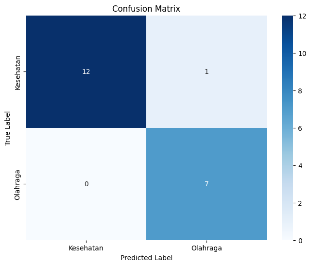

Tugas 3 - Logistic Regression#
Nama : Achmad Baharuddin Akbar
NIM : 210411100001
from google.colab import drive
drive.mount('/content/drive')
Drive already mounted at /content/drive; to attempt to forcibly remount, call drive.mount("/content/drive", force_remount=True).
import nltk
nltk.download('punkt_tab')
[nltk_data] Downloading package punkt_tab to /root/nltk_data...
[nltk_data] Package punkt_tab is already up-to-date!
True
import pandas as pd
df = pd.read_csv("/content/drive/My Drive/PPW-A/report/tugas-ppw/hasil_preprocesing.csv")
df.head()
| judul | tanggal | isi | kategori | cleansing | case_folding | tokenize | Filtering/stopword removal | |
|---|---|---|---|---|---|---|---|---|
| 0 | 7 Rekomendasi Makanan Pencegah Kanker, Ada Wor... | Rabu, 04 Des 2024 19:19 WIB | Jakarta - Kanker merupakan salah satu penyakit... | Kesehatan | Jakarta Kanker merupakan salah satu penyakit ... | jakarta kanker merupakan salah satu penyakit ... | ['jakarta', 'kanker', 'merupakan', 'salah', 's... | jakarta kanker salah penyakit ditakuti orang p... |
| 1 | Viral Wanita Sering Halu gegara Skizofrenia, P... | Rabu, 04 Des 2024 18:05 WIB | Jakarta - Viral seorang wanita menceritakan pe... | Kesehatan | Jakarta Viral seorang wanita menceritakan pen... | jakarta viral seorang wanita menceritakan pen... | ['jakarta', 'viral', 'seorang', 'wanita', 'men... | jakarta viral wanita menceritakan pengalamanny... |
| 2 | Ilmuwan Teliti Efek Lockdown Pandemi COVID-19 ... | Rabu, 04 Des 2024 17:02 WIB | Jakarta - Sebuah penelitian terbaru mengungkap... | Kesehatan | Jakarta Sebuah penelitian terbaru mengungkapk... | jakarta sebuah penelitian terbaru mengungkapk... | ['jakarta', 'sebuah', 'penelitian', 'terbaru',... | jakarta penelitian terbaru perubahan signifika... |
| 3 | Curhat Warga Vietnam Sewa Pacar gegara Ortu Se... | Rabu, 04 Des 2024 16:01 WIB | Jakarta - Tidak hanya di Korea Selatan dan Jep... | Kesehatan | Jakarta Tidak hanya di Korea Selatan dan Jepa... | jakarta tidak hanya di korea selatan dan jepa... | ['jakarta', 'tidak', 'hanya', 'di', 'korea', '... | jakarta korea selatan jepang tren anak muda ma... |
| 4 | Ramai soal 'Brain Rot', Istilah Kekinian gegar... | Rabu, 04 Des 2024 15:00 WIB | Jakarta - Belakangan ramai soal istilah 'brain... | Kesehatan | Jakarta Belakangan ramai soal istilah brain r... | jakarta belakangan ramai soal istilah brain r... | ['jakarta', 'belakangan', 'ramai', 'soal', 'is... | jakarta ramai istilah brain rot media sosial i... |
Label Encoder#
from sklearn.preprocessing import LabelEncoder
# Transformasi data kategorik
label_encoder = LabelEncoder()
df.loc[:, 'kategori_encoded'] = label_encoder.fit_transform(df['kategori'])
# Menampilkan nilai sebelum dan sesudah konversi
print("\nNilai sebelum dan sesudah konversi:")
print(dict(zip(label_encoder.classes_, label_encoder.transform(label_encoder.classes_))))
print("\nDataFrame setelah Label Encoding:")
df
Nilai sebelum dan sesudah konversi:
{'Kesehatan': 0, 'Kuliner': 1}
DataFrame setelah Label Encoding:
| judul | tanggal | isi | kategori | cleansing | case_folding | tokenize | Filtering/stopword removal | kategori_encoded | |
|---|---|---|---|---|---|---|---|---|---|
| 0 | 7 Rekomendasi Makanan Pencegah Kanker, Ada Wor... | Rabu, 04 Des 2024 19:19 WIB | Jakarta - Kanker merupakan salah satu penyakit... | Kesehatan | Jakarta Kanker merupakan salah satu penyakit ... | jakarta kanker merupakan salah satu penyakit ... | ['jakarta', 'kanker', 'merupakan', 'salah', 's... | jakarta kanker salah penyakit ditakuti orang p... | 0 |
| 1 | Viral Wanita Sering Halu gegara Skizofrenia, P... | Rabu, 04 Des 2024 18:05 WIB | Jakarta - Viral seorang wanita menceritakan pe... | Kesehatan | Jakarta Viral seorang wanita menceritakan pen... | jakarta viral seorang wanita menceritakan pen... | ['jakarta', 'viral', 'seorang', 'wanita', 'men... | jakarta viral wanita menceritakan pengalamanny... | 0 |
| 2 | Ilmuwan Teliti Efek Lockdown Pandemi COVID-19 ... | Rabu, 04 Des 2024 17:02 WIB | Jakarta - Sebuah penelitian terbaru mengungkap... | Kesehatan | Jakarta Sebuah penelitian terbaru mengungkapk... | jakarta sebuah penelitian terbaru mengungkapk... | ['jakarta', 'sebuah', 'penelitian', 'terbaru',... | jakarta penelitian terbaru perubahan signifika... | 0 |
| 3 | Curhat Warga Vietnam Sewa Pacar gegara Ortu Se... | Rabu, 04 Des 2024 16:01 WIB | Jakarta - Tidak hanya di Korea Selatan dan Jep... | Kesehatan | Jakarta Tidak hanya di Korea Selatan dan Jepa... | jakarta tidak hanya di korea selatan dan jepa... | ['jakarta', 'tidak', 'hanya', 'di', 'korea', '... | jakarta korea selatan jepang tren anak muda ma... | 0 |
| 4 | Ramai soal 'Brain Rot', Istilah Kekinian gegar... | Rabu, 04 Des 2024 15:00 WIB | Jakarta - Belakangan ramai soal istilah 'brain... | Kesehatan | Jakarta Belakangan ramai soal istilah brain r... | jakarta belakangan ramai soal istilah brain r... | ['jakarta', 'belakangan', 'ramai', 'soal', 'is... | jakarta ramai istilah brain rot media sosial i... | 0 |
| ... | ... | ... | ... | ... | ... | ... | ... | ... | ... |
| 95 | Gurih Hangat! 5 Soto Tangkar di Jakarta, Ada y... | Selasa, 03 Des 2024 12:00 WIB | Jakarta - Soto tangkar dengan daging iga dan k... | Kuliner | Jakarta Soto tangkar dengan daging iga dan ku... | jakarta soto tangkar dengan daging iga dan ku... | ['jakarta', 'soto', 'tangkar', 'dengan', 'dagi... | jakarta soto tangkar daging iga kuah berkaldu ... | 1 |
| 96 | 4 Seafood Segar yang Populer di Jepang, Ada Ik... | Selasa, 03 Des 2024 11:30 WIB | Jakarta - Jepang terkenal dengan ragam seafood... | Kuliner | Jakarta Jepang terkenal dengan ragam seafood ... | jakarta jepang terkenal dengan ragam seafood ... | ['jakarta', 'jepang', 'terkenal', 'dengan', 'r... | jakarta jepang terkenal ragam seafood lezat da... | 1 |
| 97 | 10 Resep Olahan Ayam agar Tidak Bosan Makan di... | Selasa, 03 Des 2024 11:00 WIB | Tentang Bahan Langkah Jakarta - Daging ayam me... | Kuliner | Tentang Bahan Langkah Jakarta Daging ayam mer... | tentang bahan langkah jakarta daging ayam mer... | ['tentang', 'bahan', 'langkah', 'jakarta', 'da... | bahan langkah jakarta daging ayam bahan makana... | 1 |
| 98 | Peneliti China Sebut Rutin Konsumsi Keju Bisa ... | Selasa, 03 Des 2024 10:30 WIB | Jakarta - Mendengkur disebabkan karena saluran... | Kuliner | Jakarta Mendengkur disebabkan karena saluran ... | jakarta mendengkur disebabkan karena saluran ... | ['jakarta', 'mendengkur', 'disebabkan', 'karen... | jakarta mendengkur disebabkan saluran pernapas... | 1 |
| 99 | Resep Salad Makaroni dan Sayuran ala Amwerika ... | Selasa, 03 Des 2024 10:00 WIB | Tentang Bahan Langkah Jakarta - Tak hanya enak... | Kuliner | Tentang Bahan Langkah Jakarta Tak hanya enak ... | tentang bahan langkah jakarta tak hanya enak ... | ['tentang', 'bahan', 'langkah', 'jakarta', 'ta... | bahan langkah jakarta enak dipanggang makaroni... | 1 |
100 rows × 9 columns
Split Data#
from sklearn.model_selection import train_test_split
# Split data
x = df ['Filtering/stopword removal']
y = df ['kategori_encoded']
print(x)
print(y)
x_train, x_test, y_train, y_test = train_test_split(x, y, test_size=0.2, random_state=12)
print("="*50)
print("Jumlah data latih:", len(x_train))
print("Jumlah data uji:", len(x_test))
0 jakarta kanker salah penyakit ditakuti orang p...
1 jakarta viral wanita menceritakan pengalamanny...
2 jakarta penelitian terbaru perubahan signifika...
3 jakarta korea selatan jepang tren anak muda ma...
4 jakarta ramai istilah brain rot media sosial i...
...
95 jakarta soto tangkar daging iga kuah berkaldu ...
96 jakarta jepang terkenal ragam seafood lezat da...
97 bahan langkah jakarta daging ayam bahan makana...
98 jakarta mendengkur disebabkan saluran pernapas...
99 bahan langkah jakarta enak dipanggang makaroni...
Name: Filtering/stopword removal, Length: 100, dtype: object
0 0
1 0
2 0
3 0
4 0
..
95 1
96 1
97 1
98 1
99 1
Name: kategori_encoded, Length: 100, dtype: int64
==================================================
Jumlah data latih: 80
Jumlah data uji: 20
TF-IDF (Term Frequency-Inverse Document Frequency)#
import pandas as pd
from sklearn.model_selection import train_test_split
from sklearn.linear_model import LogisticRegression
from sklearn.metrics import classification_report, confusion_matrix, accuracy_score
# Menggunakan kolom 'cleaned_text' sebagai teks input dan 'kategori' sebagai label
texts = df['Filtering/stopword removal'].fillna('') # Mengganti NaN dengan string kosong jika ada
labels = df['kategori'].fillna('unknown') # Mengganti NaN di kategori jika ada
# Melihat label yang digunakan untuk klasifikasi
print(labels.unique())
['Kesehatan' 'Kuliner']
from sklearn.feature_extraction.text import TfidfVectorizer
# Inisialisasi TF-IDF Vectorizer
tfidf = TfidfVectorizer()
# Fit dan transform pada data training
x_train_tfidf = tfidf.fit_transform(x_train)
# Transform pada data testing
x_test_tfidf = tfidf.transform(x_test)
# Mendapatkan nama fitur dari TF-IDF
feature_names = tfidf.get_feature_names_out()
# Konversi TF-IDF hasil training ke DataFrame
df_train_tfidf = pd.DataFrame(x_train_tfidf.toarray(), columns=feature_names)
# Konversi TF-IDF hasil testing ke DataFrame
df_test_tfidf = pd.DataFrame(x_test_tfidf.toarray(), columns=feature_names)
# Tampilkan hasil TF-IDF dalam DataFrame
print("TF-IDF untuk data training:")
print(df_train_tfidf)
print("\nTF-IDF untuk data testing:")
print(df_test_tfidf)
TF-IDF untuk data training:
abad abc abcnet ablation abnormal abuabu academy acang \
0 0.0 0.039823 0.039823 0.0 0.00000 0.0 0.00000 0.0
1 0.0 0.000000 0.000000 0.0 0.00000 0.0 0.04288 0.0
2 0.0 0.000000 0.000000 0.0 0.00000 0.0 0.00000 0.0
3 0.0 0.000000 0.000000 0.0 0.00000 0.0 0.00000 0.0
4 0.0 0.000000 0.000000 0.0 0.00000 0.0 0.00000 0.0
.. ... ... ... ... ... ... ... ...
75 0.0 0.000000 0.000000 0.0 0.00000 0.0 0.00000 0.0
76 0.0 0.000000 0.000000 0.0 0.00000 0.0 0.00000 0.0
77 0.0 0.000000 0.000000 0.0 0.03925 0.0 0.00000 0.0
78 0.0 0.000000 0.000000 0.0 0.00000 0.0 0.00000 0.0
79 0.0 0.000000 0.000000 0.0 0.00000 0.0 0.00000 0.0
acar acara ... youtube youtuber zalacca zat zinc zola \
0 0.0 0.0 ... 0.0 0.0 0.0 0.000000 0.0 0.0
1 0.0 0.0 ... 0.0 0.0 0.0 0.000000 0.0 0.0
2 0.0 0.0 ... 0.0 0.0 0.0 0.042714 0.0 0.0
3 0.0 0.0 ... 0.0 0.0 0.0 0.000000 0.0 0.0
4 0.0 0.0 ... 0.0 0.0 0.0 0.000000 0.0 0.0
.. ... ... ... ... ... ... ... ... ...
75 0.0 0.0 ... 0.0 0.0 0.0 0.000000 0.0 0.0
76 0.0 0.0 ... 0.0 0.0 0.0 0.000000 0.0 0.0
77 0.0 0.0 ... 0.0 0.0 0.0 0.000000 0.0 0.0
78 0.0 0.0 ... 0.0 0.0 0.0 0.000000 0.0 0.0
79 0.0 0.0 ... 0.0 0.0 0.0 0.000000 0.0 0.0
zombie zoonosis zulhas zumi
0 0.0 0.0 0.0 0.0
1 0.0 0.0 0.0 0.0
2 0.0 0.0 0.0 0.0
3 0.0 0.0 0.0 0.0
4 0.0 0.0 0.0 0.0
.. ... ... ... ...
75 0.0 0.0 0.0 0.0
76 0.0 0.0 0.0 0.0
77 0.0 0.0 0.0 0.0
78 0.0 0.0 0.0 0.0
79 0.0 0.0 0.0 0.0
[80 rows x 4565 columns]
TF-IDF untuk data testing:
abad abc abcnet ablation abnormal abuabu academy acang acar \
0 0.0 0.0 0.00000 0.0 0.0 0.0 0.0 0.0 0.0
1 0.0 0.0 0.00000 0.0 0.0 0.0 0.0 0.0 0.0
2 0.0 0.0 0.00000 0.0 0.0 0.0 0.0 0.0 0.0
3 0.0 0.0 0.00000 0.0 0.0 0.0 0.0 0.0 0.0
4 0.0 0.0 0.00000 0.0 0.0 0.0 0.0 0.0 0.0
5 0.0 0.0 0.00000 0.0 0.0 0.0 0.0 0.0 0.0
6 0.0 0.0 0.00000 0.0 0.0 0.0 0.0 0.0 0.0
7 0.0 0.0 0.00000 0.0 0.0 0.0 0.0 0.0 0.0
8 0.0 0.0 0.00000 0.0 0.0 0.0 0.0 0.0 0.0
9 0.0 0.0 0.00000 0.0 0.0 0.0 0.0 0.0 0.0
10 0.0 0.0 0.00000 0.0 0.0 0.0 0.0 0.0 0.0
11 0.0 0.0 0.00000 0.0 0.0 0.0 0.0 0.0 0.0
12 0.0 0.0 0.00000 0.0 0.0 0.0 0.0 0.0 0.0
13 0.0 0.0 0.00000 0.0 0.0 0.0 0.0 0.0 0.0
14 0.0 0.0 0.00000 0.0 0.0 0.0 0.0 0.0 0.0
15 0.0 0.0 0.04138 0.0 0.0 0.0 0.0 0.0 0.0
16 0.0 0.0 0.00000 0.0 0.0 0.0 0.0 0.0 0.0
17 0.0 0.0 0.00000 0.0 0.0 0.0 0.0 0.0 0.0
18 0.0 0.0 0.00000 0.0 0.0 0.0 0.0 0.0 0.0
19 0.0 0.0 0.00000 0.0 0.0 0.0 0.0 0.0 0.0
acara ... youtube youtuber zalacca zat zinc zola zombie \
0 0.000000 ... 0.0 0.0 0.0 0.000000 0.0 0.0 0.0
1 0.000000 ... 0.0 0.0 0.0 0.056027 0.0 0.0 0.0
2 0.134491 ... 0.0 0.0 0.0 0.000000 0.0 0.0 0.0
3 0.000000 ... 0.0 0.0 0.0 0.000000 0.0 0.0 0.0
4 0.048190 ... 0.0 0.0 0.0 0.000000 0.0 0.0 0.0
5 0.000000 ... 0.0 0.0 0.0 0.000000 0.0 0.0 0.0
6 0.000000 ... 0.0 0.0 0.0 0.000000 0.0 0.0 0.0
7 0.000000 ... 0.0 0.0 0.0 0.045247 0.0 0.0 0.0
8 0.000000 ... 0.0 0.0 0.0 0.000000 0.0 0.0 0.0
9 0.000000 ... 0.0 0.0 0.0 0.000000 0.0 0.0 0.0
10 0.000000 ... 0.0 0.0 0.0 0.000000 0.0 0.0 0.0
11 0.000000 ... 0.0 0.0 0.0 0.016382 0.0 0.0 0.0
12 0.000000 ... 0.0 0.0 0.0 0.000000 0.0 0.0 0.0
13 0.000000 ... 0.0 0.0 0.0 0.000000 0.0 0.0 0.0
14 0.000000 ... 0.0 0.0 0.0 0.000000 0.0 0.0 0.0
15 0.000000 ... 0.0 0.0 0.0 0.000000 0.0 0.0 0.0
16 0.000000 ... 0.0 0.0 0.0 0.000000 0.0 0.0 0.0
17 0.000000 ... 0.0 0.0 0.0 0.000000 0.0 0.0 0.0
18 0.000000 ... 0.0 0.0 0.0 0.000000 0.0 0.0 0.0
19 0.000000 ... 0.0 0.0 0.0 0.000000 0.0 0.0 0.0
zoonosis zulhas zumi
0 0.0 0.0 0.0
1 0.0 0.0 0.0
2 0.0 0.0 0.0
3 0.0 0.0 0.0
4 0.0 0.0 0.0
5 0.0 0.0 0.0
6 0.0 0.0 0.0
7 0.0 0.0 0.0
8 0.0 0.0 0.0
9 0.0 0.0 0.0
10 0.0 0.0 0.0
11 0.0 0.0 0.0
12 0.0 0.0 0.0
13 0.0 0.0 0.0
14 0.0 0.0 0.0
15 0.0 0.0 0.0
16 0.0 0.0 0.0
17 0.0 0.0 0.0
18 0.0 0.0 0.0
19 0.0 0.0 0.0
[20 rows x 4565 columns]
from sklearn.linear_model import LogisticRegression
# Latih model
logistic_model = LogisticRegression(max_iter=1000)
logistic_model.fit(x_train_tfidf, y_train)
LogisticRegression(max_iter=1000)In a Jupyter environment, please rerun this cell to show the HTML representation or trust the notebook.
On GitHub, the HTML representation is unable to render, please try loading this page with nbviewer.org.
LogisticRegression(max_iter=1000)
Evaluasi Model#
import seaborn as sns
import matplotlib.pyplot as plt
from sklearn.metrics import classification_report, confusion_matrix
# Prediksi
y_pred = logistic_model.predict(x_test_tfidf)
# Tampilkan classification report
print("Classification Report:")
print(classification_report(y_test, y_pred))
# Buat confusion matrix
conf_matrix = confusion_matrix(y_test, y_pred)
# Definisikan label untuk confusion matrix
labels = ['Kesehatan', 'Olahraga']
# Buat heatmap confusion matrix menggunakan seaborn dengan label yang diinginkan
plt.figure(figsize=(8, 6))
sns.heatmap(conf_matrix, annot=True, fmt='d', cmap='Blues', xticklabels=labels, yticklabels=labels)
plt.xlabel('Predicted Label')
plt.ylabel('True Label')
plt.title('Confusion Matrix')
plt.show()
Classification Report:
precision recall f1-score support
0 1.00 0.92 0.96 13
1 0.88 1.00 0.93 7
accuracy 0.95 20
macro avg 0.94 0.96 0.95 20
weighted avg 0.96 0.95 0.95 20

import pickle
import joblib
# Save the TfidfVectorizer instead of x_train_tfidf
with open('tfidf_vectorizer.pkl', 'wb') as file:
pickle.dump(tfidf, file)
# Save the trained Logistic Regression model
with open('logistic_model.pkl', 'wb') as file:
pickle.dump(logistic_model, file)
print("TfidfVectorizer and Logistic Regression model have been successfully saved.")
# Menyimpan model TF-IDF Vectorizer
joblib.dump(tfidf, 'tfidf_model.joblib')
# Menyimpan model Logistic Regression
joblib.dump(logistic_model, 'logistic_regression_model.joblib')
print("Model Logistic Regression dan TF-IDF telah disimpan dengan joblib.")
TfidfVectorizer and Logistic Regression model have been successfully saved.
Model Logistic Regression dan TF-IDF telah disimpan dengan joblib.
Pengujian#
import joblib
# Teks baru yang ingin diprediksi
new_text_1 = ['''
Jakarta - Badan Pengawas Obat dan Makanan (BPOM) belum lama ini menyita 10 jenis obat herbal ilegal yang dijual bebas di daerah Jawa Barat. Obat herbal ini diketahui mengandung bahan kimia obat (BKO) yang dapat memicu penyakit gagal ginjal dan jantung. Berikut adalah daftar produk yang disita BPOM dan berpotensi bisa merusak jantung serta ginjal: Cobra X, Spider, Africa Black Ant, Cobra India, Tawon Liar, Wan Tong, Kapsul Asam Urat TCU, Antanan, Tongkat Arab, Xian Liang. Obat ini terbilang berbahaya karena dapat merusak ginjal hingga jantung karena mengandung BKO seperti sildenafil, fenilbutazon, metampiron, piroksikam, parasetamol, hingga deksametason. Ketua Perkumpulan Dokter Pengembang Obat Tradisional Jamu Indonesia (PDPOTJI) dr Inggrid Tania mengatakan masalah kesehatan seperti gagal ginjal hingga penyakit jantung memang bisa saja terjadi pada seseorang yang mengonsumsi obat herbal ilegal tersebut. "Obat herbal yang mengandung BKO ini memang bisa mencetuskan penyakit gagal ginjal hingga gagal liver. Ini karena produsennya itu menambahkan BKO tapi tidak ditulis dalam kemasan, dengan kadar yang kita tidak ketahui. Bisa saja kadarnya banyak, melebihi batas aman," ujar dr Inggrid saat dihubungi detikcom, Kamis (10/10/2024). Tujuan para produsen, lanjut dr Inggrid memberikan BKO melebihi batas adalah untuk mendukung produk mereka yang memiliki klaim 'bombastis' seperti dapat meredakan nyeri dengan cepat atau efektif mengatasi kesulitan ereksi pada pria. Sebetulnya, obat-obat herbal berbahaya ini memiliki ciri khas tersendiri, sehingga bisa dijadikan perhatian oleh masyarakat. Menurut dr Anggi, biasanya obat herbal ilegal ini memiliki klaim bombastis pada produknya serta tidak memiliki nomor izin edar Badan POM. "Kalau dari kajian kami, literasi masyarakat kita soal obat herbal masih rendah ya. Kebanyakan mereka tidak tahu izin edar obat herbal itu tidak ada atau bodong," katanya. "Apalagi ketika mereka mencoba obatnya untuk pertama kali dan merasakan efek 'cespleng' karena kan obatnya dicampur dengan bahan kimia dengan takaran yang besar sebetulnya. Mereka merasa obatnya manjur, jadinya beli lagi dan konsumsi lagi," tutupnya. (dpy/naf)
''']
new_text_2 = ['''
Jakarta - Aktif di YouTuber dan TikTok, food vlogger ini memberi pandangannya soal etika saat mengulas makanan. Jangan sampai, ulasannya bisa menjatuhkan usaha orang lain. Di zaman digitalnya ini muncul insan-insan kreatif, seperti food vlogger dan semacamnya. Kehadiran food vlogger agaknya memberikan dampak tersendiri bagi pelaku usaha kuliner, ada negatif dan juga positif. Positifnya bisa membantu mempromosikan usaha milik orang lain. Namun, sebaliknya, food vlogger terkadang bisa mematikan usaha karena hasil ulasannya yang terkesan menjatuhkan. Seperti yang belum lama ini terjadi, seorang food vlogger sampai di-blacklist oleh pengusaha kuliner di Yogyakarta setelah memberi komentar menjatuhkan pada warung makan rawon. Food Vlogger Perlu Tahu! Begini Etika Mengulas Makanan Foto: iStock Dari kejadian tersebut, banyak pelaku usaha kuliner terutama Usaha Mikro, Kecil, dan Menengah (UMKM) yang khawatir dengan kehadiran para food vlogger. Food vlogger yang eksis bernama Almas pun memberikan pandangannya. Melalui TikTok @almasqol (03/10/24) ia mengatakan bahwa seharusnya ada etiket tersendiri saat mengulas makanan. Apalagi ketika food vlogger datang tanpa undangan atau seperti pelanggan biasa. "Kita sebagai konten kreator makanan itu seharusnya lebih mendukung UMKM supaya makanan atau produknya itu lebih dikenal, gimana caranya agar UMKM tetap naik," ujarnya dalam video yang dikonfirmasi detikFood (16/10/24). Food vlogger dengan 1,7 juta followers itu mengakui bahwa dirinya sebagai konten kreator makanan tidak begitu memahami detail rasa dan istilah dalam kuliner. Food Vlogger ilustrasi. Foto: iStock Namun, meski begitu, ia dapat menyampaikan informasi penting mengenai makanan yang dicicipinya. "Mengulas makanan ya udah sewajarnya, kasih info-info penting dan keseluruhan rasa," tuturnya. Menurutnya, jika rasanya kurang memuaskan bisa menyampaikan keluhan langsung ke pemilik usaha. Namun, jika rasanya enak bisa langsung sampaikan ke khalayak ramai lewat video kreatif. "Karena kalau menjatuhkan itu gak cuma ownernya aja, di situ ada karyawan yang dihidupkan dan dari makan di tempat itu," tutur food vlogger yang terkenal dengan jargon 'wenak cik!'. Dengan kasus tersebut, menjadi pembelajaran bagi ia dan konten kreator lain. Ia juga berharap agar semua konten kreator dapat lebih bijak dalam bersosial media. Videonya pun ramai ditanggapi netizen. Banyak netizen yang sependapat dengan pandangan Almas mengenai fenomena food vlogger. "Setuju, seharusnya kritik bisa disampaikan dengan etika yang baik dan harus membangun. Jangan cuma komentar jelek gak berguna," tulis netizen. "Orang tua gue jualan makanan kaki lima, jujur gue khawatir banget kalau ada food vlogger yang gak beretika kayak gitu, gak kebayang gimana sedihnya orang tua," tuturnya. @almasqol Ber Oponi !! #wenakcik #almasqol ♬ Monkeys Spinning Monkeys - dg cria (raf/odi)
''']
# Load the saved vectorizer and model
tfidf = joblib.load('tfidf_model.joblib')
model = joblib.load('logistic_regression_model.joblib')
# New texts to predict
new_text = new_text_1 + new_text_2
# Preprocess and transform using the loaded TF-IDF vectorizer
new_text_tfidf = tfidf.transform(new_text)
# Predict using the Logistic Regression model
predictions = model.predict(new_text_tfidf)
# Map predictions to categories
predicted_categories = ["Kesehatan" if prediction == 0 else "Kuliner" for prediction in predictions]
# Output the predictions
for i, category in enumerate(predicted_categories):
print(f"Prediction for text {i+1}: {category}")
Prediction for text 1: Kesehatan
Prediction for text 2: Kuliner